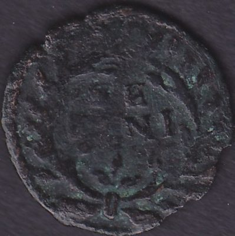

Home
Italia
Stati Preunitari
Ducato di Urbino
Ducato di Urbino
Clicca sulle monete per vedere il retro
Francesco Maria II della Rovere
1 Sesino

1574-1624
Home
Italia
Stati Preunitari
Ducato di Urbino